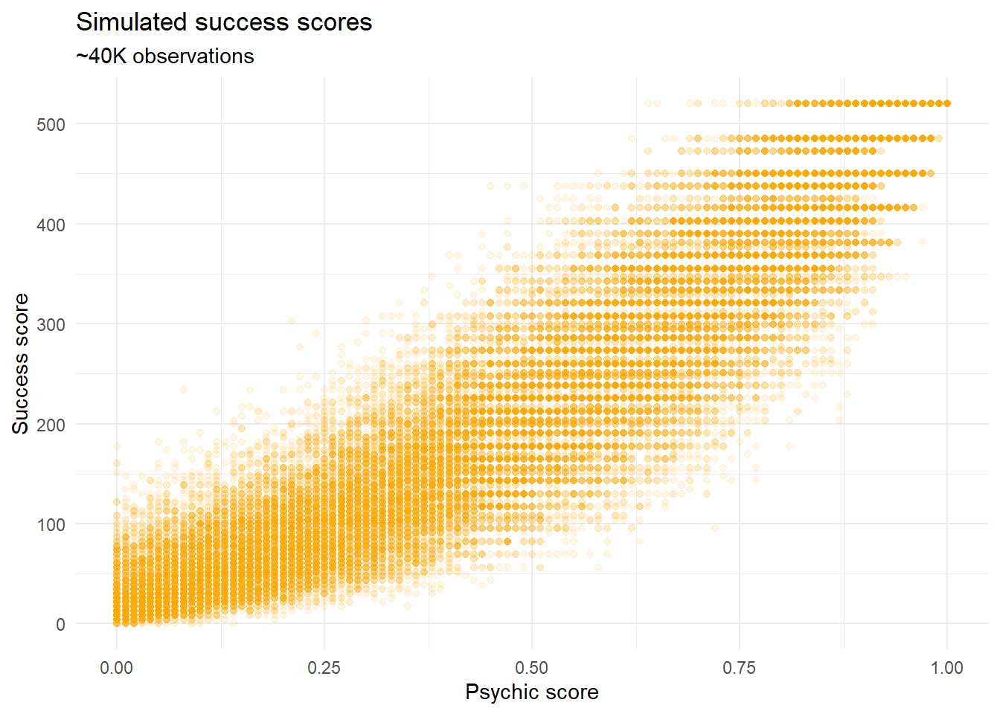
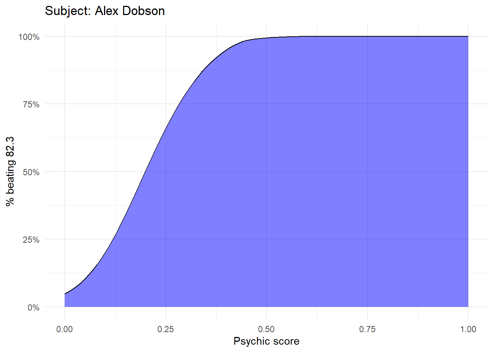
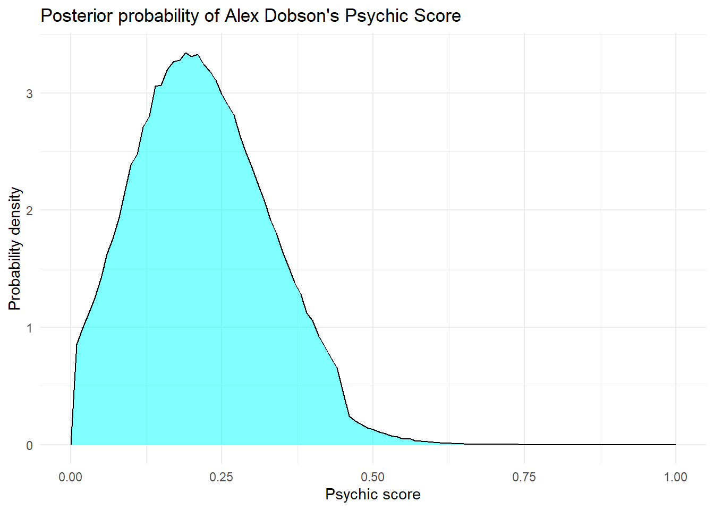
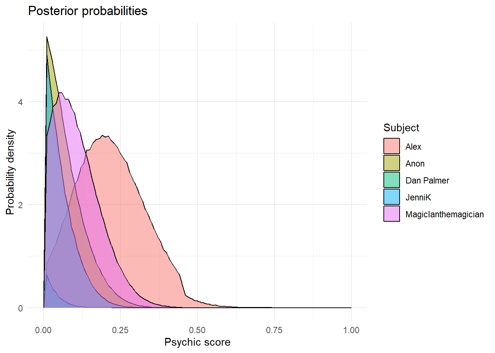
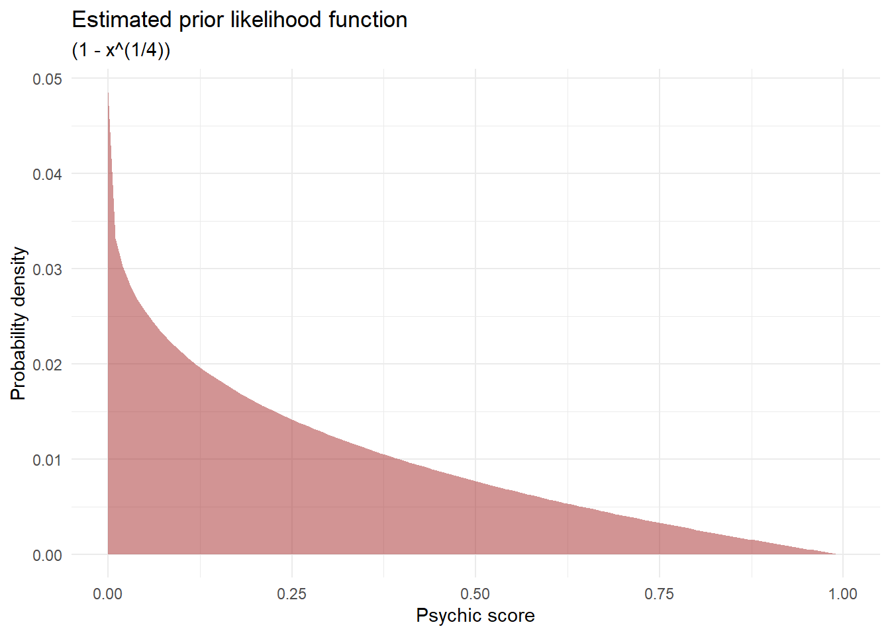
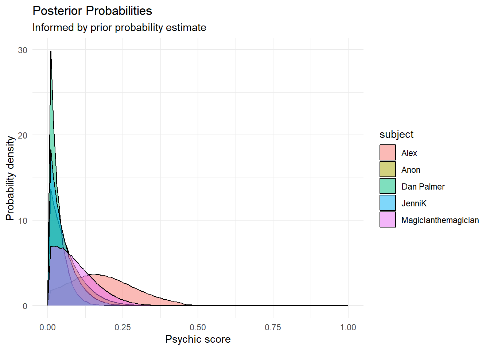

All the Right Questions September 2026
Welcome!
Welcome to the 2nd edition of All the Right Questions: The new monthly Church Army newsletter about all things data. As always nothing here represents Church Army views - just mine.
Thanks so much for joining me here. If you’ve got any questions, or if there’s anything you’d like to see covered in a future edition of ARQ, please let me know! Drop me an email (I’m david.lovell), or just come and say hi to me at my desk.
We’ve got a very big week this week: We’ll be applying modern philosophy to impact measurement and concluding our examination of latent psychic power within the office. Huge.
This week:
- The Big Idea: Is Church Army a Device? The merits of applying Borgmann’s device paradigm to data collection in a charitable context. (🧐🧠🤓🤯)
- The lesson: The moment you’ve all been waiting for - definitive answers about who is the most psychic.
- Really Good Survey Training in October: Only a limited number of spaces remain!
- The puzzle: Win incredible prizes that are yet to be determined in our very first micro-essay writing competition!
The Big Idea: Is Church Army a Device?
The device paradigm
Did you know that ‘focus’ is the Latin word for ‘fireplace’?
For centuries, the hearth was the centre of the home. It was the warmth around which a family gathered, and the light by which they saw one another every evening. Pre-modern people could not take warmth and light for granted, but carefully maintained these things through an unwavering pattern of familial responsibility consisting of things like the chopping of wood, the shaving of kindling, and the daily construction, conflagration and cleansing of the fire itself. The hearth was not merely a device for producing heat, but an object through which a family became entangled in mutual responsibility, the passing of the day and the enjoyment of one another’s company.
I’m currently reading Albert Borgmann’s Technology and the Character of Contemporary Life (1984). It’s a bit of a challenging book but very enjoyable and pertinent. His big idea is that modern devices are very different from pre-modern tools, and it’s changing the way we think and live. The radio, for example, is not the violin. For Borgmann, the most important difference is that the things modern devices ‘produce’ have almost nothing to do with the way that they work - a radio ‘produces’ music by means of electrical transistors, but there is nothing musical about the transistors themselves. The transistors correspond to the process rather than the product, and for this reason they are hidden, since the promise of the modern device is that we can have the product without engaging with the complexity of the process. But the beauty of the violin is the beauty of its process; the playing of a violin can not be meaningfully separated from the music it creates, so that the instrumentalist, the instrument and the audience are woven in to a common fabric of time, space and culture. At the height of his rhetorical flourish, Borgmann asks whether we can legitimately use the same word, ‘music’, to describe both the sound of the violin and the projection of the radio.
Why am I prattling on about this? Mostly because I think it’s fascinating and illuminating. But also because Borgmann doesn’t just observe a difference between old tools and new ones, but he considers this difference inextricably linked to a different way of doing business with the world and with one another. Modern devices operate according to what Borgmann calls the ‘device paradigm’, and he argues that the paradigm has become an instinctive way for modern people to think about the world. And that got me to thinking - with my Data Insights hat on - what might be the benefits of reflecting critically on the modern charity as a kind of device?
Charity as device
Let’s consider the charity-supporter relationships through the paradigm of device. For supporters, the ‘charity device’ delivers a commodified experience of participation without effort. You open an email and watch a video. You read a well-crafted paragraph in which you are thanked for your involvement in the work. You are persuaded that you are connected to these places and people, and that you are making impact happen. This participation is earnest and in some measure costly, but it is almost exclusively mediated through the manufacture of digital goods via digital devices. One device creates a digital artifact, another device ‘delivers’ it to a person hundreds of miles away, and a further device (we hope) ‘sends’ an amount of money to fund the work. These are the constituent parts of a supporter engagement device, which enables a scalable approach to fundraising that is unconstrained by geography. The cost is that the goalposts of the charity-supporter relationship have moved; individual supporters are no longer geographically connected to the work as volunteers, neighbors or beneficiaries, but are linked to the work through an automated exchange of digital commodities.
This is true not only of our supporters, but also of some us who work within the Mission Support Team. I have personally spent almost a decade doing working adjacent to Centres of Mission, but in all that time (to my shame) I have never actually set foot in one. I have gathered data and summarised findings, but I have never stacked chairs or refilled the pantry. I’ve compiled sprawling matrices describing our work, but I have never opened up on a frosty morning in February, or had my day interrupted by someone coming through the door in need of help. Our evangelists are deeply entangled in these places and they know them as the ancient family new its hearth. I know these places only through my devices, and through the commodities that my machines produce. I turn these places off at 5 o’clock.
I know that this is a very selective way of thinking about our work. I know that lots of us have visited centres of mission, or attended (and planned!) residential Gatherings, or fostered warm and personal relationships with supporters and churches over the phone. But I still believe that the device paradigm can help us, particularly because of the ways in which it accords with perceived differences in the outlook of front-line workers and the mission support team, especially in relation to the collection of data and the measurement of ‘impact’. I’ve taken enough of your time, so I’ll summarise these briefly in the hope that they prompt further thought:
- For the distant and disembodied observer, ‘impact’ is treated an abstract commodity produced by the centre-of-mission-device. Totaling up measures of impact across diverse contexts belies an understanding that these devices can be thought of as equivalent because they each produce the same commodity. For the observer, the ‘means’ are secondary to the ‘ends’. For the evangelist, the two can not be meaningfully separated.
- In my time as a researcher, it was not uncommon to hear evangelists ‘push back’ against a perceived expectation of consistent and predictable results. Such results are normally expected from devices, and are expected in general because of the prevalence of the device paradigm. Evangelists were essentially concerned that we understood their ministry as a device, and that we did not care to understand how it worked.
- More generally, there was an espoused sense of ‘distance’ on all sides - a displacement from one another’s contexts leading to a lack of mutual understanding. This distance is a necessary consequence of the devices we use, which enable us to speak to a person without really being with them.
I hope that those observations are persuasive and thought provoking. But I will leave you with this:
Evangelist as folk practitioner
Borgmann concludes his book by advocating wise living in the modern world through what he calls ‘folk practices’. These are things like the hearth, which integrate the mind and the body with the physical, natural, social and temporal layers of reality. Fok practices are things like linocutting, or playing the violin, or playing Magic the Gathering with the boys on a Tuesday night. These things bring us into contact with people, with place and with time. They are difficult and unpredictable, and they invite repeated failure.
Our evangelists are folk practitioners, and that is - if you will excuse the crudity of the term - their ‘unique selling point’. In a world that is increasingly dispersed and predictable, they embody the gospel and enmesh themselves in the mess and magnificence of a particular place. They give themselves to people, to place and to time. Their work is difficult and unpredictable, and it invites repeated failure. But it is real, it is consistent and it is patiently embodied. Perhaps the difficulty we have had in summarising the impact of such work is a vital feature of its resistance to the imposition of the paradigm of the modern device.
Really Good Survey Training in October!
Yeah so I’ll level with you, so far only Cameron has signed up for this. Please deliver him from a horribly intimate training experience, and deliver yourselves from the awful fate of writing a purposeless survey. Thursday 15th October, starting 09:30 in the Carlile room. Be there or be bad at surveys for the rest of your life. Hit me up if you’re interested and I’ll give you more details.
The lesson:
Last month, we asked a bold and timely question. Are any of our colleagues psychic? This month, we’re going to get some answers.
For those of you who are just joining us, here is a brief recap:
- We got beloved colleagues (hereafter ‘subjects’) to guess 10 randomly drawn cards.
- We assigned a ‘success score’ based on the improbability of correct guesses.
- We postulated the existence of a ‘psychic score’ to describe a subject’s relative psychic power.
This month, we’ll look at each subject’s success score and ask the question ‘what level of psychic power best explains this result?’
Let’s start with our favourite and most potentially psychic subject: Alex Dobson. Alex got an astounding success score of 82.3 - more than double the expected average. The task before us is to establish the link between the measure of Alex’s success and the measure of his psychic ability. And to do that, we’ll need to use a simulation. We’ll ask the computer to pretend that it has a psychic score of 0, and then draw 10 cards and calculate its total success score. Then we’ll ask it to do that 4 million times and to give us 4 million scores, then we will do the same thing again for a psychic score of 0.01, then 0.02, all the way up to a psychic score of 1. That’s a total of 40 billion cards flipped, which takes the computer a few minutes to work out. Here’s what (some of) that data looks like:
Next, we take Alex’s success score of 82.3, and compare it with the results of our simulation. For each interval of psychic score, what proportion of our simulated results are equal to or higher than 82.3? Here is what that looks like:

If Alex’s psychic score was 0, his chance of getting this score would be about 5%. If his psychic score were 0.5, he would almost certainly get a higher score. So the measure of his psychic score is probably somewhere between 0 and 0.5.
You might be wondering why we’re looking at the likelihood of beating a score of 82.3, rather than the odds of getting that exact score. There are two reasons:
- The odds of getting an exact score are incredibly low, so we wouldn’t have a lot to work with.
- We’re using our measures to approximate a continuum, and on a continuum the chances of getting an exact value always tend towards zero. Imagine looking at a satellite map of the UK and trying to click on the location of a specific pigeon on the roof of Pennine 5 - the odds of getting it exactly right are infinitesimal, and get smaller as the target gets smaller.
For this reason, instead of looking at the simulated probability of getting an exact score, we will look at the slope of the graph above. We’re essentailly asking: “As psychic score increases, how does the probability of beating 82.3 increase?” So without further ado, here is the plot of that slope:

And there it is! We’re formally described just how psychic Alex is!
Perhaps you are feeling disappointment. Perhaps you are feeling confused. What does this graph mean?
This is a graph of posterior probability, which represents our buest guess (or guesses) about what might be true based on what we have observed. It contains a lot of information, but it can be tricky to understand. So here is a run down:
- The area under the line is the important thing.
- The area under the line adds up to 1, and corresponds to everything that’s possible.
- The area under the line between
Psychic score = 0.25andPsychic score = 0.50corresponds to the probability that AD’s psychic score is between 0.25 and 0.5. - All of this is our best guess based on the data we have avaialble.
- All of this is true only if our model truly reflects reality (pssst: it doesn’t).
So without doing any further calculations (too lazy), we can look at this graph and say:
- AD’s psychic score is almost definintely lower than 0.5
- AD’s psychic score is almost definintely higher than 0
- AD’s psychic score is most likely to be somewhere around 0.2
Often in statistical reporting, you might here this information condensed into a headline along the lines of ‘Alex has a psychic power of of 0.2’. That would be a measure of central tendency, which reports the average ‘weight’ of the area under the graph. You might also encounter a claim of a ‘significant’ finding, which just means that Alex’s true psychic power is very likely to be higher or lower than some relevant benchmark. As a trivial example, if we were looking to prove that AD’s psychic power was lower than 0.5, we would almost certainly find that it was ‘significantly’ so, because the odds of him having a score greater than 0.5 are visibly remote.
Anyway here’s wonderwall everyone’s posterior probabilities thanks so much for taking part:

A final warning
For anyone who’s sufficiently interested to keep reading. I mentioned above that these results are only as good as our statistical model, and I’ve already hinted that the model is not very good. Can anyone tell me why?
Yes, correct, fantastic work. It’s becuase we’ve taken for granted that:
- Everyone has some level of psychic ability, however small.
- Every level of psychic ability is equally likely
Intuitively, this is unconvincing. Even if you believe in psychic power, you probably believe that high levels of it are quite rare. So when Alex makes 3 good guesses about the 10 cards he draws, you interpret that through your prior assumptions about the general likelihood of any given person having high psychic ability. Our model did not do that, but it can and it should!
Let’s say that the prior likelihood of anyone having psychic ability looks something like this:

Those priors would have the following results on our posterior probabilities:

Alex has done okay out of this - our prior is generally more incredulous about psychic scores above 0.5. But notice that his graph is now a lot flatter, and weighted towards the 0 end of things. This reflects a reduced confidence in his having a psychic score markedly greater than zero. And note that we are still assuming that everyone has a psychic score! That’s a very big ‘if’ to bake in to the model. In any case, everyone apart from Alex is looking decidedly less psychic.
Some of you might be wondering what the point of this kind of test is if at the end of the day we’re just going to feed in our prior assumptions and see them reflected right back at us. Three orofound answers to that question:
- Something something philosophical point about prior assumptions shaping inferred conclusions in every sphere of knowledge, the problem of induction etc.
- Yes, this whole thing was for teaching purposes and is basically meaningless.
- But these methods are normally used in conjunction with machine learning techniques in which the priors are tweaked as the model is trained on large volumes of data, then tested against a separate data set. So as long as your priors aren’t egregiously wrong it can still be useful in the real world.
Thanks so much for coming with me on this learning journey!
The Puzzle
We’re having a competition this week. In 200 words or less, explain how the problem of induction (see link above) is relevant to practice of measuring impact in the charity sector. Best answer will receive a prize that’s proportional to the effort that went into it. You may be helped in your approach by considering an analagous or related problem, such as the Turkey illusion or the Sunrise problem.